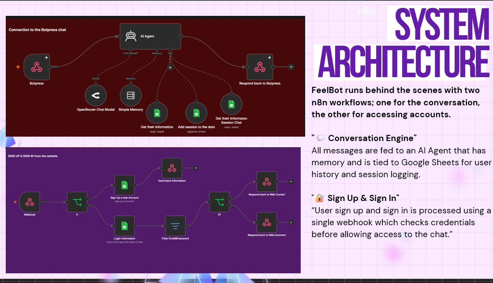
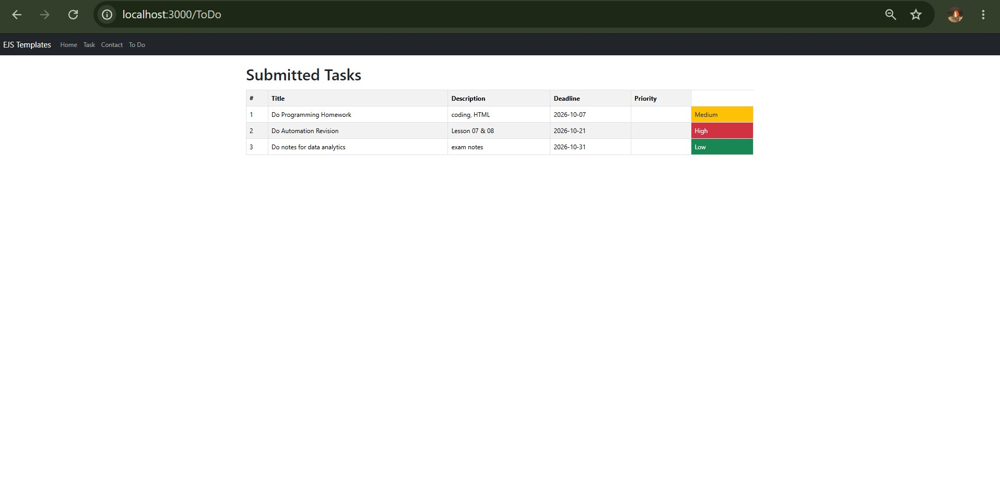
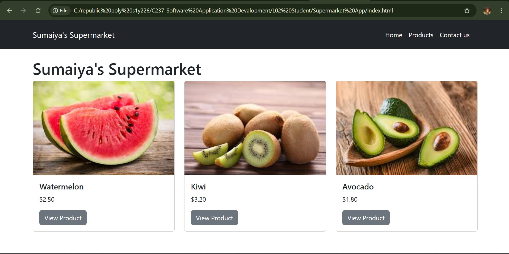
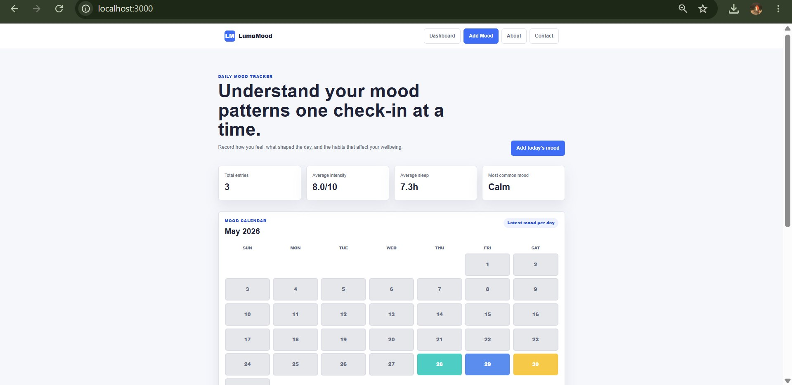

Backend Developer
Feel BotAI / Automation Project
Built conversation logic, connected Botpress to n8n, developed a Google Sheets memory system, and tested multi-tool workflows.
Portfolio · 2026
I’m Sumaiya — a curious builder using AI, data and technology to create thoughtful solutions for real people.
View my workBased in
Singapore
Profile
I turn curiosity into practical digital experiences through code, data and automation.
I’m pursuing a Diploma in Applied AI & Analytics at Republic Polytechnic. I enjoy understanding how systems connect, working through complex problems, and shaping technology into something clear and useful.
Republic Polytechnic
Web development
Résumé
Built conversation logic, connected Botpress to n8n, developed a Google Sheets memory system, and tested multi-tool workflows.
Created the interface, implemented interactive features, worked with database queries, and tested the application.
Helped senior citizens use mobile apps and shared practical guidance about common online scams.
Artificial intelligence, data analytics, programming, automation and applied technology.
Selected work
Selected projects that show how I approach practical problems using technology.

A supportive wellness chatbot powered by connected AI workflows and persistent memory.

A web application for organising tasks and tracking progress.

A responsive shopping experience with intuitive navigation and clear product details.

A daily journal for recording moods, spotting patterns and reflecting on wellbeing.
Capabilities
A versatile foundation that keeps growing with every project.
Python · JavaScript
HTML · CSS · SQL
Pandas · Excel
Visualisation
GenAI · RAG
AI Agents
Botpress · n8n
Workato · Azure
Credentials
Python Institute
Workato
LinkedIn Learning
Professional Development
Professional Development
Professional Development
Have a project or opportunity?
Sumaiya Fathima · Singapore